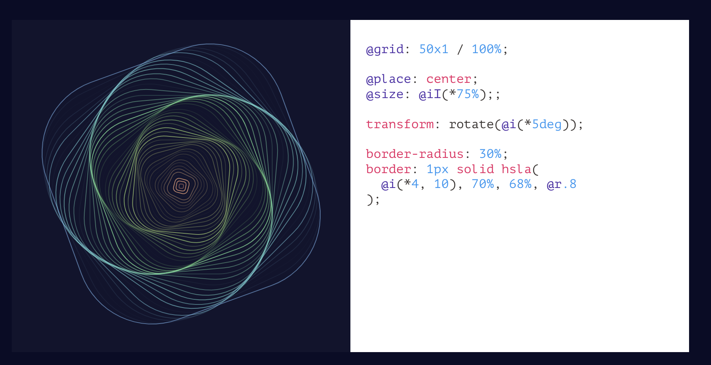

CSS 技术演进之路：从基础到前沿的创新之旅
在网页设计的浩瀚星空中，CSS（层叠样式表）始终是那颗最为璀璨的恒星，照亮了网页从单调走向绚丽的征程。今天，让我们一同穿越时光隧道，探寻 CSS 技术近年来从传统到现代的发展脉络，感受每一次变革所带来的强大力量。

一、CSS：网页样式的基石
曾经，在互联网的洪荒时代，网页只是简单的 HTML 文本堆砌，毫无美感可言。页面布局混乱，文字样式单一，元素的呈现缺乏基本的规范和设计。CSS 的诞生，犹如一场及时雨，彻底改变了这一局面。它赋予了开发者为网页元素披上华丽外衣的能力，通过简单的规则，就能让文字变得灵动、色彩斑斓，布局也变得井井有条。
例如，我们可以轻松地为整个网页设置统一的字体和颜色：
1 | body { |
还能精确地控制元素的位置和大小：
1 | .box { |
正是这些基础的 CSS 功能，为网页设计搭建起了最初的框架，让互联网世界开始有了美的萌芽。它解决了 HTML 无法有效分离内容与表现的问题，使得网页的结构更加清晰，开发者能够专注于样式的设计，为用户带来更具视觉吸引力的页面。
然而，CSS 也存在一些不足之处。随着项目规模的扩大，其全局作用域的特性容易导致样式冲突，代码的复用性较差，维护起来较为困难。而且 CSS 本身的语法相对简单，缺乏一些高级的编程特性，如变量、函数等，在处理复杂的样式逻辑时显得力不从心。
二、CSS Module：应对样式混乱的利器
随着网页项目规模的不断膨胀，传统 CSS 的弊端逐渐暴露无遗。在大型项目中，全局作用域的样式规则就像一群不受控制的野马，常常引发样式冲突。不同组件或模块之间的样式相互影响，一个小小的改动可能就会引发意想不到的“蝴蝶效应”，导致整个页面布局的混乱。例如，在一个包含多个页面和复杂组件的网站中，可能会出现多个地方使用相同的类名，但样式却不完全相同的情况，这使得维护和调试变得异常困难。
在这一困境下，CSS Module 应运而生。它借鉴了模块化编程的思想，将 CSS 样式进行了精细的模块化封装。每个模块都拥有独立的作用域，就如同一个个独立的小世界，彼此互不干扰。
以 React 项目为例，我们可以创建一个名为 Button.module.css 的文件：
1 | .button { |
然后在组件中引入并使用：
1 | import styles from './Button.module.css'; |
这样，按钮的样式就被严格限制在该组件内，无论项目变得多么庞大复杂，都能有效避免样式冲突，确保每个组件的样式都能保持独立和稳定。CSS Module 解决了 CSS 全局作用域带来的样式冲突问题，提高了项目的可维护性和扩展性，使得团队协作开发大型项目变得更加顺畅。
但 CSS Module 也并非完美无缺。它需要一定的学习成本来适应新的模块化语法和使用方式。在一些复杂的项目中，可能会出现模块之间的依赖关系处理不当的情况，导致样式的继承和覆盖出现问题。而且在开发过程中，每次修改样式都需要重新编译模块，这在一定程度上会影响开发效率。
三、Sass 和 Less：CSS 预处理器的崛起
当开发者们渴望更高效、更灵活地编写 CSS 时，Sass 和 Less 如同两位英勇的先锋，带来了全新的变革。在早期的 CSS 开发中，代码的复用性较差，编写复杂样式时需要大量重复的代码，而且缺乏变量和函数等编程概念，使得样式的管理和维护变得繁琐。
Sass 扩展了 CSS 的语法，引入了变量、嵌套、混合（mixin）等强大的功能。例如，在 Sass 中，变量的使用让主题颜色的管理变得轻而易举。我们可以定义：
1 | $primary-color: #007bff; |
当需要更换主题颜色时，只需修改 $primary-color 的值，所有相关的样式都会自动更新，大大提高了开发效率。
嵌套功能更是让样式结构更加清晰直观。比如：
1 | nav { |
这相比于原生 CSS 的平铺式写法，减少了大量的重复代码，使样式表的组织结构更加符合逻辑。
Less 同样具有类似的强大功能，它也支持变量定义，如：
1 | @primary-color: #007bff; |
并且 Less 还支持使用 JavaScript 表达式，为样式的动态生成提供了更多的可能性，进一步拓展了 CSS 开发的边界。Sass 和 Less 解决了 CSS 语法的局限性，提供了更强大的编程能力，使得开发者能够更高效地编写和管理 CSS 代码，提升了开发效率和代码质量。
不过，Sass 和 Less 也存在一些问题。它们需要额外的编译步骤，在开发过程中可能会增加一定的构建时间。而且对于一些不熟悉预处理器语法的开发者来说，学习成本较高。此外，在大型项目中，如果预处理器的使用不当，可能会导致生成的 CSS 文件过大，影响页面加载性能。
四、CSS in JS：JavaScript 与 CSS 的深度融合
在 JavaScript 主导的 Web 开发时代，CSS in JS 成为了一种极具创新性的趋势。随着前端应用的复杂度不断增加，组件的状态管理和样式的动态变化需求也日益增长。传统的 CSS 与 JavaScript 分离的模式在处理这些问题时显得力不从心。例如，在一个具有复杂交互的单页应用中，根据用户的操作或组件的不同状态，需要动态地改变样式，但在传统模式下，实现这种动态样式的切换需要在 JavaScript 和 CSS 之间进行繁琐的操作，容易导致代码的混乱和难以维护。
CSS in JS 打破了传统的 CSS 与 JavaScript 分离的模式，将 CSS 样式直接嵌入到 JavaScript 文件中，实现了两者的紧密结合。
以 styled-components 库为例，在 React 组件中可以这样创建样式化的组件：
1 | import styled from'styled-components'; |
在这里，样式与组件成为了一个有机的整体，方便了组件的复用和根据组件状态动态修改样式。例如，我们可以根据组件的 props 来动态改变按钮的颜色：
1 | const Button = styled.button` |
这种方式充分利用了 JavaScript 的强大功能，为 CSS 开发带来了全新的思路和方法。CSS in JS 解决了在复杂应用中 JavaScript 与 CSS 协同工作的问题，使得样式的动态管理更加便捷，提高了组件的可维护性和复用性，适应了现代前端开发的需求。
然而，CSS in JS 也有一些缺点。它使得 CSS 代码的可调试性变差，因为样式代码被嵌入到 JavaScript 中，在浏览器的开发者工具中查看和调试样式不像传统 CSS 那样直观。而且在一些情况下，可能会导致 JavaScript 包的体积增大，影响页面的加载性能。此外，对于一些习惯了传统 CSS 开发方式的开发者来说，需要一定的时间来适应这种新的开发模式。
五、CSSnext：展望 CSS 的未来
CSSnext 则像是一位来自未来的使者，让开发者提前体验到 CSS 标准中即将到来的新特性。随着 CSS 标准的不断演进和浏览器的持续更新，开发者们渴望能够尽早使用新的 CSS 功能，以提升开发效率和页面的性能，但又不得不等待浏览器的广泛支持。
CSSnext 包含了许多令人兴奋的功能，例如自定义属性和 var() 函数的结合，为样式的灵活性提供了巨大的提升。我们可以在 :root 中定义：
1 | :root { |
通过这种方式，我们可以轻松地实现全局样式变量的管理，使得样式的维护和更新变得更加便捷。
自定义媒体查询让媒体查询的语义更加清晰明了：
1 | @custom-media --small-viewport (max-width: 30em); |
开发者可以根据项目的需求，自定义各种媒体查询条件，更好地适应不同设备的屏幕尺寸。
还有简化的 calc() 函数，能够安全地在计算中使用自定义属性：
1 | :root { |
这些功能只是 CSSnext 的冰山一角，它为 CSS 开发带来了更多的可能性和创新空间，让我们能够提前构建出更加先进和高效的网页样式。CSSnext 解决了开发者在等待 CSS 新特性在浏览器中广泛支持的过程中，提前使用这些特性进行开发的需求，加速了 CSS 技术的应用和推广。
尽管 CSSnext 带来了诸多便利，但它也存在一些局限性。由于它是对未来 CSS 特性的提前使用，可能会存在一些兼容性问题，在一些旧版本的浏览器中无法正常工作。而且随着 CSS 标准的不断变化，CSSnext 中的某些功能可能会在未来的标准中有所调整，这就需要开发者及时关注和更新代码。
六、CSS 原子化：极致的性能与简洁
CSS 原子化追求的是一种极致的简洁和高效。在当今互联网环境下，页面性能的重要性日益凸显，尤其是在移动设备上，用户对页面加载速度的要求越来越高。传统的 CSS 编写方式可能会导致 CSS 文件过大，影响页面的加载性能。
CSS 原子化将所有的样式都分解为最小的、不可再分的原子类，就像乐高积木中的每一块小积木。
例如，在 Tailwind CSS 中，有大量的原子类可供使用。我们可以通过组合这些原子类来快速构建页面的样式：
1 | <div class="flex justify-center items-center h-screen bg-gray-100"> |
在这个例子中，flex 表示使用弹性布局，justify-center 和 items-center 分别控制元素在水平和垂直方向上的对齐方式，h-screen 设置元素的高度为屏幕高度，bg-gray-100 是背景颜色类，p-8 表示内边距为 8 个单位等等。通过这种方式，我们可以快速搭建出页面的基本结构，同时由于原子类的高度复用性，大大减少了 CSS 文件的大小，提高了页面的加载速度，特别适合对性能要求极高的项目。CSS 原子化解决了 CSS 文件过大影响页面加载性能的问题，通过提供简洁高效的原子类，提升了页面的性能和开发效率。
但 CSS 原子化也并非没有缺点。在使用原子类构建样式时，可能会导致 HTML 代码中的类名过多，使得代码的可读性变差。而且对于一些复杂的样式需求，可能需要组合大量的原子类，这在一定程度上增加了开发的难度和维护成本。此外，如果对原子类的理解和运用不够熟练，可能会出现样式覆盖或冲突的情况。
从最初的 CSS 到如今的 CSS 原子化，CSS 技术的发展历程见证了网页设计领域的不断创新与进步。每一次的技术变革都像是一次飞跃，为开发者带来了更强大的工具，让我们能够创造出更加精美、高效、用户体验良好的网页应用。在未来，CSS 技术必将继续前行，不断探索新的边界，为互联网世界带来更多的惊喜与可能。
希望这篇博客文章能够帮助读者清晰地了解 CSS 技术的发展脉络和各个阶段的特点。如果你在阅读过程中有任何疑问或建议，欢迎随时交流。